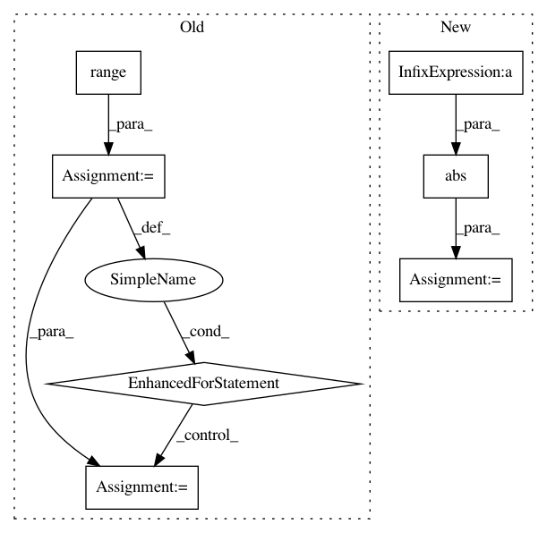

e81142f0869321cd8792e13bfc4f6fb85d9f1efc,libact/query_strategies/uncertainty_sampling.py,UncertaintySampling,make_query,#UncertaintySampling#,62
Before Change
// O(NK) + O(N)
prob = self.model.predict_real(X_pool)
min_margin = np.inf
for j in range(len(prob)):
m1_id = np.argmax(prob[j])
m2_id = np.argmax(np.delete(prob[j], m1_id))
margin = prob[j][m1_id] - prob[j][m2_id]
if margin < min_margin:
min_margin = margin
ask_id = j
else:
raise ValueError(
"Invalid method "%s" (available choices: ("lc", "sm", "le")"
% self.method
After Change
else:
// Find 2 largest decision values
ind = np.partition(-np.abs(dvalue), 2, axis=1)[:2]
margin = np.abs(np.abs(dvalue[:, ind[0]]) - np.abs(dvalue[:, ind[1]]))
ask_id = np.argmin(margin)
return unlabeled_entry_ids[ask_id]
In pattern: SUPERPATTERN
Frequency: 3
Non-data size: 7
Instances
Project Name: ntucllab/libact
Commit Name: e81142f0869321cd8792e13bfc4f6fb85d9f1efc
Time: 2015-12-22
Author: yangarbiter@gmail.com
File Name: libact/query_strategies/uncertainty_sampling.py
Class Name: UncertaintySampling
Method Name: make_query
Project Name: iskandr/fancyimpute
Commit Name: e2f51920215f2c3be39de713626d1288c607eb75
Time: 2015-12-28
Author: alex.rubinsteyn@gmail.com
File Name: test/test_auto_encoder.py
Class Name:
Method Name: test_rank1_auto_encoder
Project Name: statsmodels/statsmodels
Commit Name: 1bb7f603f00783801b57d114c0eeea0c55950174
Time: 2020-08-25
Author: ezequiels.90@gmail.com
File Name: statsmodels/robust/scale.py
Class Name:
Method Name: _qn_naive